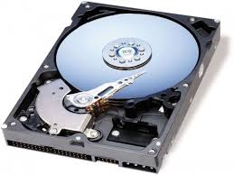
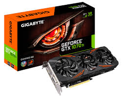

Intel establece el estándar de la industria para el desempeño e innovación de procesadores, el fortalecimiento de las laptops, las desktops, las estaciones de trabajo y los servidores, para uso empresarial y personal, gaming inmersivo, creación de contenido, Internet de las cosas, inteligencia artificial y más. Explora la variedad de opciones aquí.
La placa base, también conocida como tarjeta madre, placa madre o placa principal (motherboard o mainboard en inglés), es una tarjeta de circuito impreso a la que se conectan los componentes que constituyen la computadora
En informática, unidad de disco duro o unidad de disco rígido (en inglés: hard disk drive, HDD) es un dispositivo de almacenamiento de datos que emplea un sistema de grabación magnética para almacenar y recuperar archivos digitales
Una tarjeta gráfica o tarjeta de video es una tarjeta de expansión de la placa base de la computadora que se encarga de procesar los datos provenientes del procesador y transformarlos en información comprensible y representable en el dispositivo de salida
A lo largo de la historia, la tecnología ha jugado un papel primordial en el desarrollo de la vida material y cultural de los pueblos. En buena medida, el progreso humano está basado en la invención de procedimientos y mecanismos para la resolución de problemas concretos del quehacer cotidiano como las primeras técnicas utilizadas para encender fuego hasta las complejas máquinas del mundo moderno.
Plataforma es un concepto con varios usos. Por lo general se trata de una base que se halla a una cierta altura o de aquello que brinda un soporte, ya sea físico o simbólico. El uso más habitual del término virtual, por su parte, está vinculado a lo que existe de manera aparente o simulada, y no físicamente.
Autor: Luis Diego Sipion Galvez